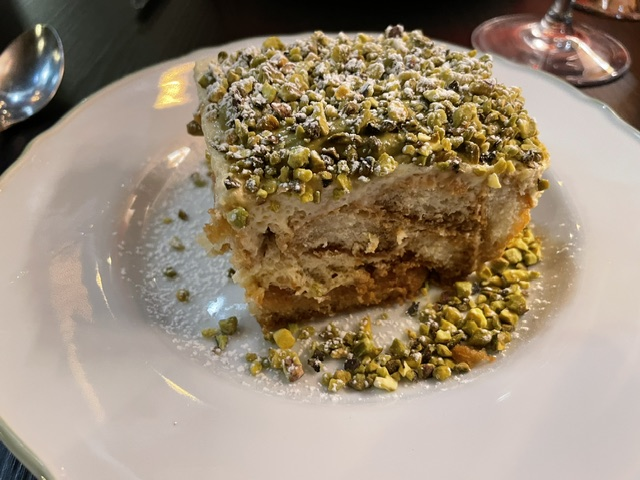
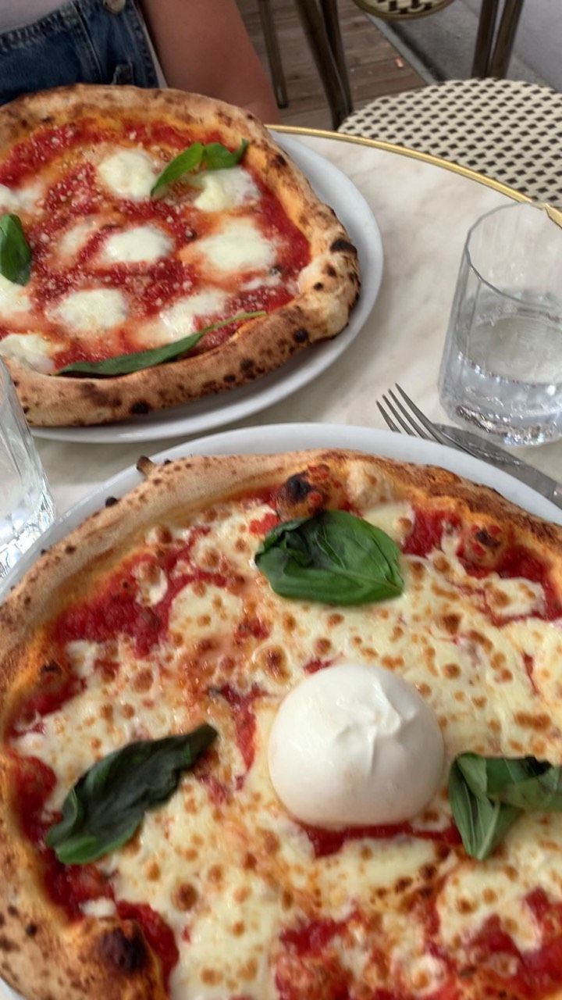
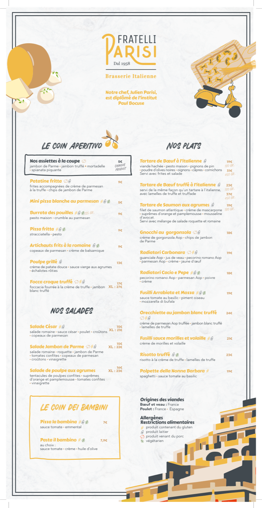
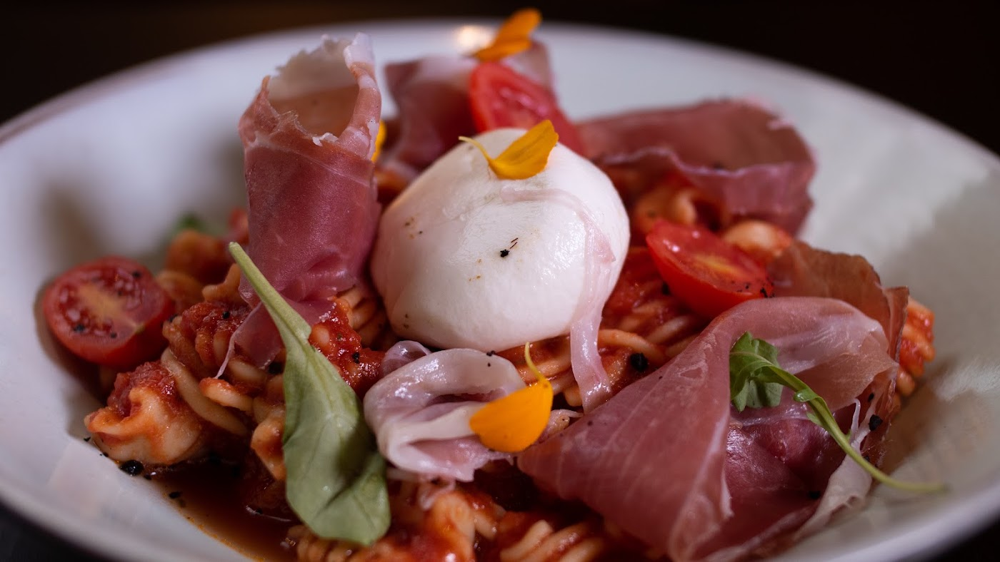
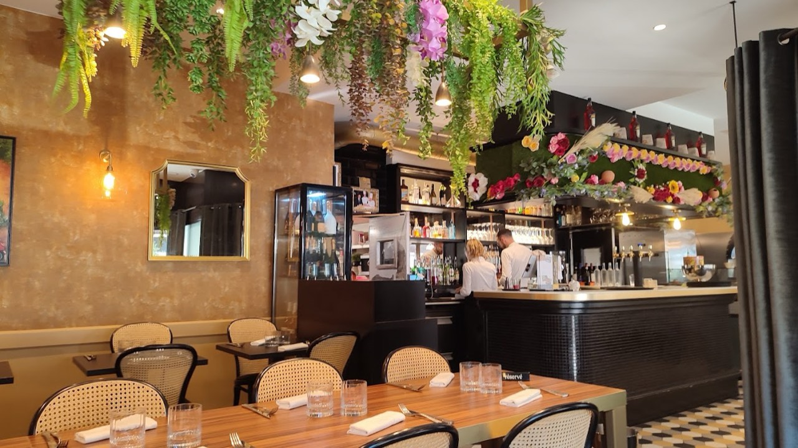
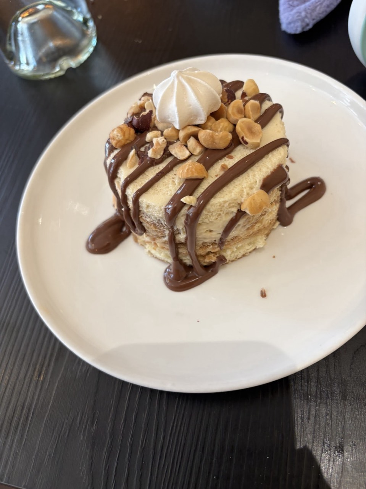
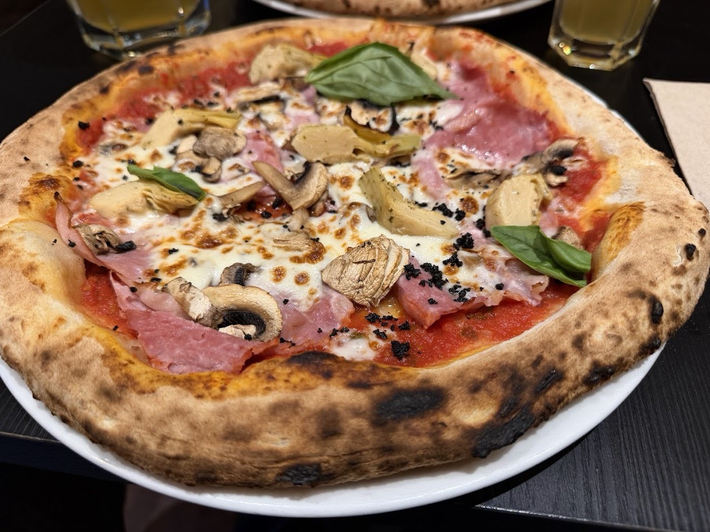
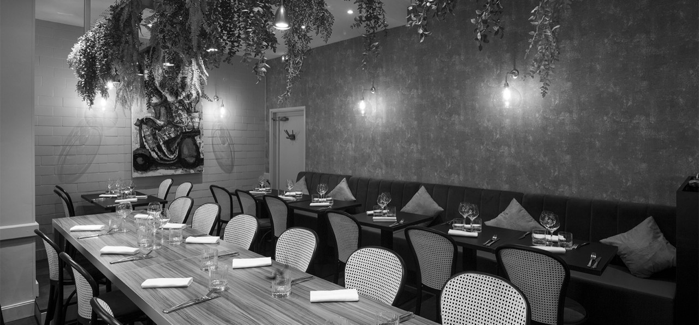

Restaurant italien · Lyon 6e
Fratelli Parisi
Fratelli Parisi, restaurant italien à Lyon 6e, vous accueille au 67b Cr Vitton, 69006 Lyon. L'entreprise est en activité depuis 2018.
- Cuisine italienne
- Terrasse
- Options végétariennes
- 4,5 ★ sur Google (898 avis)

En images







Nous trouver
67b Cr Vitton, 69006 Lyon
| Lun-Jeu | 12:00-14:00 · 19:00-22:00 |
| Ven-Dim | 12:00-15:00 · 19:00-22:00 |